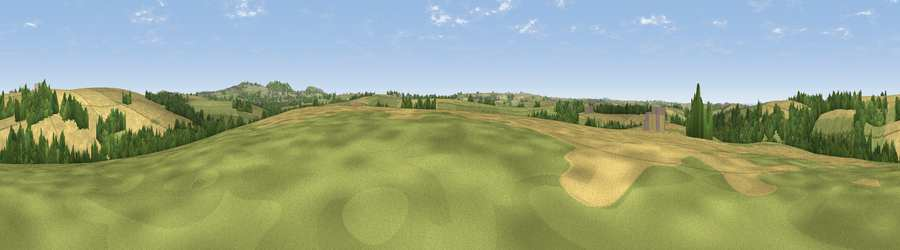

Viewpoint near Kestle Mill
#36716 in England · top 72% of its area beats it · near Kestle MillWhere it is
The exact computed spot (SW 86975 58875). Click the marker for map links.
The view, rendered

A 360° render of this exact spot computed from the terrain model, tree cover and land cover — summer colours, afternoon light, calibrated against photographs of famous viewpoints. Real trees, hedges and buildings will differ in detail.
The panorama
Grey silhouette: terrain skyline in each direction (720 bearings, Earth curvature and refraction included). Dashed green: skyline with trees (+15 m) and buildings (+8 m) as obstacles. Blue strip: how far the ground is visible on each bearing.
Where the view opens
Wedge length = distance to the farthest visible ground on that bearing (vegetation-aware). Rings at 10, 25 and 50 km.
What fills the view
49% cropland · 30% grassland · 19% woodland · 1% built-up
Angular shares of the visible panorama (visual magnitude), not map area. Landscape diversity 0.48 (0–1 Shannon).
Key numbers
More beautiful places nearby
The staircase of upgrades: each row has a higher view potential than everything closer. Driving times are estimates from straight-line distance, calibrated against real road routing — check an actual route before setting out.
| Place | Direction | Drive | Score |
|---|---|---|---|
| Viewpoint near Kestle Mill | NW · 1 km | ~3 min | 51.0 |
| Viewpoint near Kestle Mill | NE · 2 km | ~5 min | 60.7 |
| Viewpoint near St. Newlyn East | SSW · 5 km | ~11 min | 66.1 |
| Penhale Hill | ESE · 5 km | ~11 min | 80.3 |
| Viewpoint near Penhale | ESE · 6 km | ~12 min | 81.7 |
| Viewpoint near Nanpean | E · 11 km | ~21 min | 84.2 |
| Viewpoint near Foxhole | ESE · 11 km | ~22 min | 86.4 |
| Viewpoint near Stenalees | E · 13 km | ~24 min | 88.0 |
50.39107, -4.99833 · source: screening · position refined by local search. Computed location — check access rights before visiting.